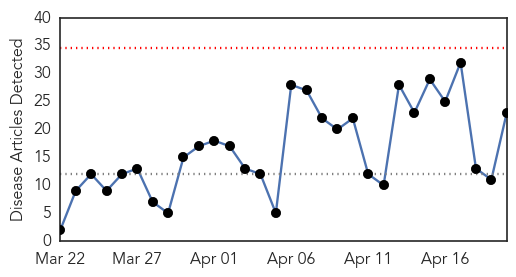
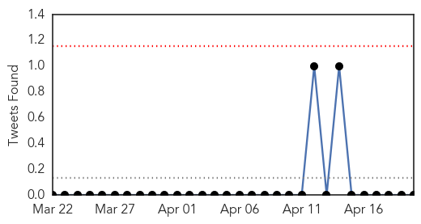
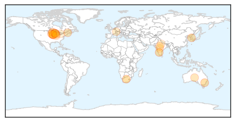

30 Day Trends
Web: 0 alerts, 0 warnings
Twitter: 0 alerts, 0 warnings
Top Articles:
- 1.000
- South Africans warned of severe flu strains
- 0.998
- Pregnant Women Advised To Get Flu Vaccination
- 0.990
- ACT Health to address six week wait for vaccinations in north Canberra
- 0.934
- Canine flu kills dog in McHenry County, 2 more infections suspected
- 0.928
- Dog Flu Epidemic in the Midwest
- 0.915
- Scientists still at a loss to explain spread of avian flu
- 0.865
- Ban issued on poultry movement in county
- 0.814
- The Assam Tribune Online
- 0.802
- Despite CDC vacancies, Maine is prepared for health emergencies — Opinion — Bangor Daily News — BDN Maine
- 0.782
- Wisconsin Declares Emergency, 5.3-Million Iowa Chickens Affected by Avain Influenza
- 0.779
- Bird flu trial begins
- 0.763
- Canine Influenza Spreading Across Midwest: Over 1000 Confirmed Cases In Dogs : T-Lounge : Tech Times
- 0.692
- Canine Flu Outbreak What Dog Owners Need To Know
- 0.681
- growers remain vigilant to prevent spread of bird flu
- 0.662
- Iowa reports biggest U.S. outbreak of bird flu in poultry
- 0.633
- GSK yanks all doses of quadrivalent flu jab for potency problems
- 0.630
- Tests show no flu among Muncie shelter dogs
- 0.620
- Poppe: State officials doing all they can to combat bird flu
- 0.560
- Avian flu has turkey farmers on edge
- 0.552
- Culling begins, poultry shops banned in surveillance zone
- 0.532
- Osceola County chicken farm tests positive for avian flu
- 0.524
- Deadly disease flares up
- 0.521
- 4 key steps to improving healthcare in Asia
Top Tweets:
-
No tweets found for Apr 20, 2015
Web/News Articles
Tweets
Article Locations
Article Confidences